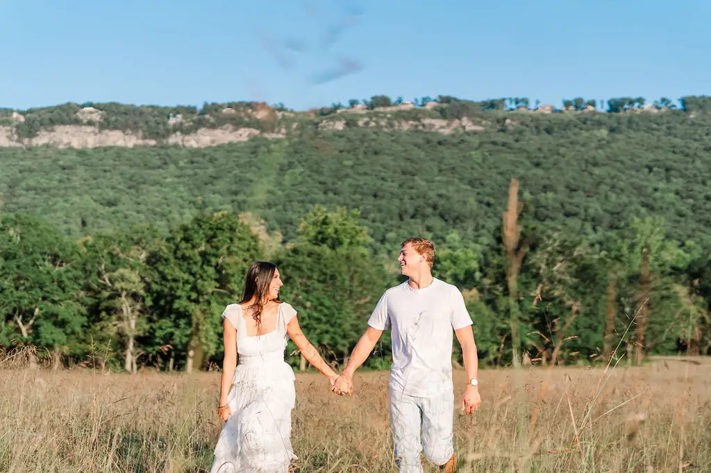
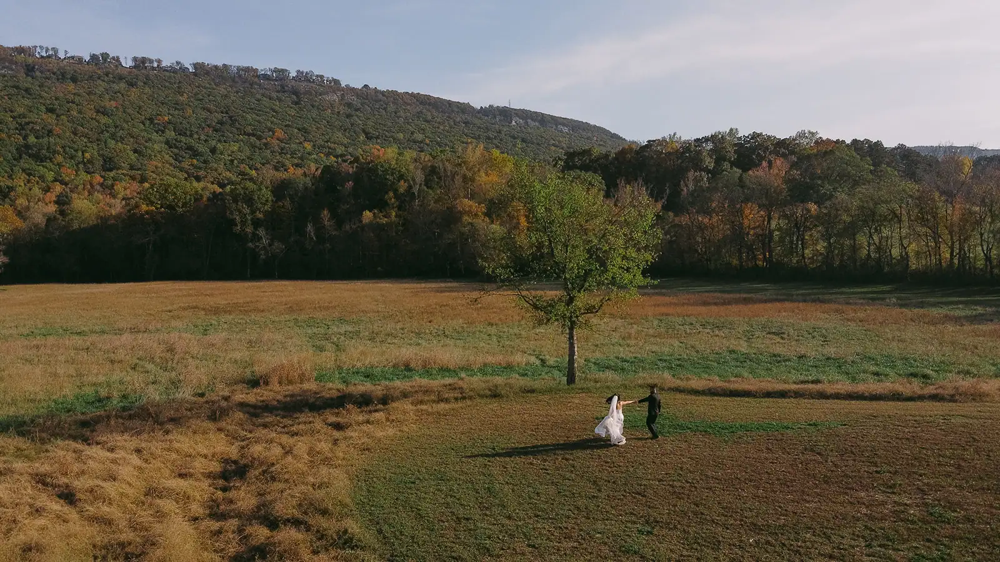

The meadow sits low between ridgelines, which is why it works. Sound stays in it. Wind drops in it. And the hills hold the last of the sun a good half-hour after the light has left the grass — the reason every photographer who works here asks for a late-afternoon ceremony.
Nothing here is fixed — not where you face, not where your family sits, not what stands behind you in the photographs your grandchildren will look at. A June ceremony and an October one point in different directions, and both are right.

Come at four in the afternoon and stand where the arch would go. It is a difficult place to say no to at that hour.
Book a Visit